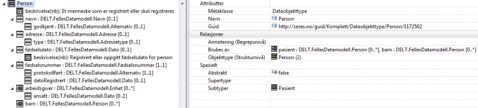

SERESxsd
Beskrivelse av hvordan SERESxsd er bygget opp.
På denne siden:
Innledning
SERESxsd er det XML Schema (XSD)-formatet som genereres fra SERES-modeller. Det finnes to format-varianter der beskrivelsene av de to typene er angitt under egne avsnitt nedenfor:
- Standard: Opprinnelig format knyttet til opprinnelige Altinnkrav.
- Altinn-tilpasset: Et tilpasset format for Altinn som ikke benytter navnerom, dvs. noNamespace, for SERES-dataene.
Begge formatene er derfor påvirket av Altinn-krav, det første basert på opprinnelig kravspesifikasjon og det siste basert på en tilpasning til den kjørende Altinn II-løsningen.
Det er SERES Domeneklient som brukes for å generere XSD-ene via den innebygde komponenten SERES Modell-API som igjen inneholder to XSLT-baserte transformasjoner XSD-generator og XSD-transformator. Den første genererer en standard-XSD, men den siste transformerer standard-XSD-en videre til en Altinn-tilpasset XSD.
Hovedprinsipp
En meldingsspesifikasjon er en oppskrift på hvordan en XML-basert melding skal bygges opp, både strukturelt og innholdsmessig. Den kan benyttes for å validere at meldingen oppfyller gitte krav.
SERESxsd-ene er i hovedsak utformet basert på det såkalte Venetian Blind-mønstret hvor alle typer, både complexType or simpleType, gis et navn og legges på øverste nivå, rett under schema-elementet. Referanser mellom elementer gjøres gjennom type-attributter, ref. Mønstre for XML Schema-dokumenter.
Venetian Blind anses best å reflektere det bærende prinsipp i SERES-modelleringen om objektorientering og en UML-nær metamodell. Metamodellen strukturerer det XMI-formatet som brukes for import til og eksport fra repository.
Fordeler med Venetian Blind:
- Alle typer er navngitt og kan gjenbrukes, noe som passer godt til objektorientert modellering.
- Bare en XML-variant er en gyldig instans for et gitt datainnhold. Dette gir den standardisering vi ønsker å bidra til.
Ulemper:
- Støtter ikke elementsubstitusjon (gjennom bruk av substitutionGroup-mekanismen), men dette representer uansett en praksis vi ikke ser som ønskelig.
I hovedsak hentes innholdet i SERESxsd-ene fra det vi kaller Implementasjonsnivået og de metadataelementene som hører hjemme her. Det kan genereres en SERESxsd fra både meldingsmodeller og presentasjonsmodeller.
Tilknyttede elementer fra de overliggende nivåene Strukturnivå og Begrepsnivå kan også være aktuelle for utvidet bruk av SERESxsd-ene. Men slike elementer vil ikke innføres før det dekker et behov i Altinn-løsningen eller for andre løsningsplattformer som er besluttet å skulle støtte. Så langt kan brukeren ved generering av en XSD krysse av for Referanser til begrepets GUID som er slik at dersom et metadataelement har en såkalt annotering til et begrep så vil dette begrepets GUID angis som eget XSD-attributt med navn seres:semRef.
Navnerom
Standard navnerom
En standard SERESxsd opererer innenfor flere navnerom:
- Et target namespace (default namespace, dvs. uten prefiks) som er navnerommet for de faglige, offentlige metadata (som er hovedfokus). I det “Altinn-tilpassede” formatet brukes ikke targetNamespace, men et anonymt noNamespace.
- Et navnerom for modellspråket XML Schema med prefiks xsd
- Et SERES-spesifikt navnerom for forvaltningsdata med prefiks seres
- Et kodebibliotek-spesifikt navnerom med prefiks kodebib
SERES-navnerommet tenkes brukt for å gjøre knytninger både mot evt. legacy-type identifikatorer (slike som ORid-er) og mot SERES-relatert informasjon, herunder tilhørighet i SERES Repository. Dette navnerommet brukes teknisk sett først og fremst for å legge ut fremmedattributter i spesifikasjonens elementer og typer, men brukes også for spesielle validerende attributter for meldingene. Og det kan brukes til å legge ut valgfrie eller påkrevde attributter i meldingene.
Følgende import-deklarasjon angis for å beskrive seres-navnerommet:
<xsd:import namespace="http://seres.no/xsd/forvaltningsdata" schemaLocation="http://seres.no/xsd/seres.xsd"/>
Følgende import-deklarasjon angis for beskrive kodebib-navnerommet, men bare dersom XSD-en genereres for bruk mot Kodebiblioteket:
<xsd:import namespace="http://kodebibliotek.brreg.no/xsd/kodebibliotek" schemaLocation="http://www.seres.no/xsd/kodebibliotek.xsd"/>
Her er den fulle listen av attributter (hvilke som blir brukt vil delvis kunne avgjøres av brukeren forut for genereringen):
- dataFormatProvider – Hvem som har levert formatet for meldingen (dvs. XSD-en), hvor vi setter verdien “SERES”.
- dataFormatId – Samme som skjemanummer der metadata er hentet fra ORdb, eller en SERES-spesifikt id for spesfikasjonen.
- dataFormatVersion – Samme som spesifikasjonsnummer hvis metadata er hentet direkte fra ORdb, ellers en SERES-spesifikt versjons-id for spesifikasjonen.
- skjemanummer – OR-spesifikt nummer for XSD-en.
- spesifikasjonsnummer – OR-spesifikt versjonsnummer for XSD-en.
- guid – En global identifikator uttrykt som en URI for det metadataelementet i SERES Repository som XSD-elementet/typen er generert fra (ref. GUID).
- gruppeid – OR-identifikator for gruppen som elementet evt. stammer fra.
- orid – OR-identfikator for datadefinisjonen som elementet evt. stammer fra.
- repformatid – OR-identifikator for representasjonsformatet som elementer evt. stammer fra.
- feltnummer – Feltnummer som en datadefinisjon er tilknyttet i et OR-skjema.
- tittel – Tittel for OR-skjemaet eller et SERES-spesifikt navn på meldingsmodellen som spesifikasjonen er laget på grunnlag av.
- beskrivelse – En kort tekstlig beskrivelse av spesifikasjonen.
- blankettnummer – OR-spesifikt blankettnummer for spesifikasjonen.
- etatid – Organisasjonsnummer for etaten som er eier av spesifikasjonen.
- etatnavn – Navn på etaten som er eier av spesifikasjonen.
Eksempler på utlegg av validerende attributter i SERESxsd-er med “Standard”-utforming:
<xsd:attribute ref="seres:guid" use="required" fixed="http://seres.no/guid/ORDataenkeltype/RegnskapAr-17102/400287"/>
<xsd:attribute ref="seres:orid" use="required" fixed="17102"/>
Altinn-tilpasset navnerom
I det “Altinn-tilpassede” formatet legges meldingsvaliderende attributter i noNamespace:
- dataFormatProvider – Hvem som har levert formatet for meldingen (dvs. XSD-en), hvor vi setter verdien “SERES”.
- dataFormatId – Samme som skjemanummer der metadata er hentet fra ORdb, eller en SERES-spesifikt id for spesfikasjonen.
- dataFormatVersion – Samme som spesifikasjonsnummer hvis metadata er hentet direkte fra ORdb, ellers en SERES-spesifikt versjons-id for spesifikasjonen.
- guid – En global identifikator uttrykt som en URI for det metadataelementet i SERES Repository som XSD-elementet/typen er generert fra (ref. GUID). Denne er validerende om dette er spesifikt angitt.
- orid – OR-identfikator for datadefinisjonen som elementet evt. stammer fra. Denne er validerende om dette er spesifikt angitt.
Format for utlegg av validerende attributter med i SERESxsd-er med “Altinn”-tilpasning:
<xsd:attribute name="dataFormatProvider" type="xsd:string" use="required" fixed="SERES"/>
<xsd:attribute name="dataFormatId" type="xsd:string" use="required" fixed="4564"/>
<xsd:attribute name="dataFormatVersion" type="xsd:string" use="required" fixed="36149"/>
<xsd:anyAttribute/>
<xsd:attribute name="guid" type="xsd:anyURI" use="required" fixed="http://seres.no/guid/ORDataenkeltype/RegnskapAr-17102/400287"/>
<xsd:attribute name="orid" type="xsd:integer" use="required" fixed="17102"/>
Eventuelle attributter for kodebiblioteket, der dette skal brukes, legges også ut i noNamespace:
<xsd:attribute name="CodeID-PH" type="xsd:anyURI"/>
<xsd:attribute name="NodeID-PH" type="xsd:anyURI"/>
<xsd:attribute name="CodeText-PH" type="xsd:string"/>
<xsd:attribute name="NodeText-PH" type="xsd:string"/>
<xsd:attribute name="PathText-PH" type="xsd:string"/>
<xsd:attribute name="NodeName-PH" type="xsd:string"/>
<xsd:attribute name="NavigationHierarchyID" type="xsd:anyURI"/>
<xsd:attribute name="NodeListID" type="xsd:anyURI"/>
<xsd:attributename="CodeTypeID" type="xsd:anyURI"/>
<xsd:attributeGroup name="PlaceholderAttributes">
<xsd:attribute ref="CodeID-PH"/>
<xsd:attribute ref="NodeID-PH"/>
<xsd:attribute ref="CodeText-PH"/>
<xsd:attribute ref="NodeText-PH"/>
<xsd:attribute ref="PathText-PH"/>
<xsd:attribute ref="NodeName-PH"/>
</xsd:attributeGroup>
<xsd:attributeGroup name="PlaceholderAttributesCodeType">
<xsd:attribute ref="CodeID-PH"/>
<xsd:attribute ref="CodeText-PH"/>
</xsd:attributeGroup>
<xsd:complexType name="Code">
<xsd:simpleContent>
<xsd:extension base="xsd:string">
<xsd:attribute ref="NodeListID" use="required"/>
<xsd:attributeGroup ref="PlaceholderAttributes"/>
</xsd:extension>
</xsd:simpleContent>
</xsd:complexType>
<xsd:complexType name="ExternalCode">
<xsd:simpleContent>
<xsd:extension base="xsd:string">
<xsd:attribute ref="CodeTypeID" use="required"/>
<xsd:attributeGroup ref="PlaceholderAttributesCodeType"/>
</xsd:extension>
</xsd:simpleContent>
</xsd:complexType>
Tegnsett og sett av navnerom
Standard tegnsett
- “Target” - navnerom og “default” navnerom er det samme og utgjøres av innhold fra meldings-eller presentasjonsmodellen og deres relasjoner til andre modeller.
Navnekonvensjon:
http://seres.no/xsd/<domenenavn>/<modellnavn>/<tjenesteversjon>, her http://seres.no/xsd/Domene-A/Meldingsmodell-B/2011, ref. Altinn-krav 2.
Altinn-tilpasset tegnsett
- Modellelementene knyttes ikke til noe navnerom: noNamespace.
- Andre navnerom er angitt med prefiks:
- XML Schema-navnerommet: xsd
- SERES-type forvaltningsdata: seres
- Kodebibliotek: kodebib (ikke med i de Altinn-tilpassede dersom XSD-en ikke er laget for bruk sammen med Kodebiblioteket.
Annotation/Documentation-del
Det angis hvilken XSD-variant som er generert slik:
Standard annotation
<xsd:attribute name="XSD-variant" fixed="Standard"/>
Altinn-tilpasset annotation
<xsd:attribute name="XSD-variant" fixed="Altinn 1.3"/>
Modellinnhold og tilhørende XSD-struktur
SERES Metamodell
Datamodell

Meldingsmodell

XSD-struktur
- XSD-komponentene reflekterer i størst mulig grad hvordan modellelementene i tilhørende Meldingsmodell eller Presentasjonsmodell med innhold fra tilknyttede Datamodeller er bygd opp. De identifiserer også hvert enkelt modellelement med utvalgte forvaltningsdata.
- Spesifikasjonene kan også angi at selve meldingene kan ha attributter som skal valideres mot tilhørende korrekte forvaltningsdata.
Dersom XSD-en skal brukes i systemer som ikke støtter UTF-8, er det lagt inn funksjonalitet for å generere ASCII-tegn-kombinasjoner for de særnorske bokstavene (translitterasjon):
- æ → ae
- ø → oe
- å → aa
- Æ → AE
- Ø → OE
- Å → AA
En meldingsspesifikasjon er bygd opp av komponenter som enten er elementer eller attributter. Komponentene er globale dersom de ligger rett under <xsd:schema>-elementet, som er på øverste nivå. Alle andre komponenter er lokale.
I SERES brukes ett globalt element (som representerer hele meldingen) og et antall globale, navngitte typer (simpleType og complexType). En slik struktur (mønster) har fått betegnelsen Venetian Blind. Koplingen mellom typene og opp til elementer gjøres gjennom type-referanser med bruk av typenavnene.
Standard struktur
Meldingsspesifikasjonene gis følgende hovedinnhold (merk UTF-8-støtte) for de opprinnelige standard SERESxsd-ene:
<?xml version="1.0" encoding="UTF-8"?>
<xsd:schema xmlns="http://www.seres.no/Domene-A/Modell-B/2011"
xmlns:seres="http://seres.no/xsd/forvaltningsdata"
xmlns:xsd="http://www.w3.org/2001/XMLSchema"
targetNamespace="http://www.seres.no/Domene-A/Modell-B/2011"
elementFormDefault="qualified"
attributeFormDefault="unqualified">
<xsd:import namespace="http://seres.no/xsd/forvaltningsdata" schemaLocation="http://seres.no/xsd/seres.xsd"/>
<xsd:import namespace="http://kodebibliotek.brreg.no/xsd/kodebibliotek" schemaLocation="http://www.seres.no/xsd/kodebibliotek.xsd"/>
<xsd:element name="melding" type="Modell-B"/>
<xsd:complexType name="Modell-B" seres:elementtype="Meldingsmodell" seres:guid="http://seres.no/guid/Brønnøysundregistrene/Meldingsmodell/BestillingEnhetInput_M/5491">
<xsd:sequence>
...
</xsd:sequence>
<xsd:attribute ref="seres:dataFormatProvider" use="required" fixed="SERES"/>
<xsd:attribute ref="seres:dataFormatId" use="required" fixed="3005"/>
<xsd:attribute ref="seres:dataFormatVersion" use="required" fixed="32057"/>
<xsd:anyAttribute/>
</xsd:complexType>
<xsd:complexType name="..." seres:elementtype="...">
...
</xsd:complexType>
...
<xsd:simpleType name="..." seres:elementtype="...">
...
</xsd:simpleType>
...
</xsd:schema>
complexType-komponenter og simpleType-komponenter kan komme i vilkårlig rekkefølge.
Altinn-tilpasset struktur
Tilsvarende brukes følgende struktur for de Altinn-tilpassede XSD-er:
<?xml version="1.0" encoding="UTF-8"?>
<xsd:schema xmlns:xsd="http://www.w3.org/2001/XMLSchema"
xmlns:xsi="http://www.w3.org/2001/XMLSchema-instance"
xmlns:seres="http://seres.no/xsd/forvaltningsdata"
elementFormDefault="qualified"
attributeFormDefault="unqualified">
<xsd:element name="melding" type="Modell-B"/>
<xsd:complexType name="Modell-B" seres:elementtype="Meldingsmodell" seres:guid="http://seres.no/guid/Brønnøysundregistrene/Meldingsmodell/BestillingEnhetInput_M/5491">
<xsd:sequence>
...
</xsd:sequence>
<xsd:attribute name="dataFormatProvider" type="xsd:string" use="required" fixed="SERES"/>
<xsd:attribute name="dataFormatId" type="xsd:string" use="required" fixed="3005"/>
<xsd:attribute name="dataFormatVersion" type="xsd:string" use="required" fixed="32057"/>
<xsd:anyAttribute/>
</xsd:complexType>
<xsd:complexType name="..." seres:elementtype="...">
...
</xsd:complexType>
...
<xsd:simpleType name="..." seres:elementtype="...">
...
</xsd:simpleType>
...
</xsd:schema>
Den siste varianten har ikke et targetNamespace, men opererer i noNamespace.
I en mellomperiode fra 4. mai 2012 frem til 3. juni 2013 ble det deklarert et navnerom ns1 som ikke kunne brukes direkte:
xmlns:ns1="http://www.seres.no/Domene-A/Modell-B/2011"
SERES Metamodell
Utgangspunktet for en SERESxsd er enten et metadataelement av metaklasse Meldingsmodell eller av metaklasse Presentasjonsmodell.
Meldingsmodell
Hver meldingsmodell inneholder minst en meldingsdel av metaklasse Meldingsdel. Meldingsdel er en spesialisering av metaklassen Dataobjekttype (se diagrammet under). Hvert element av type Dataobjekttype eier et antall elementer av som enten er av metaklasse Dataegenskap eller metaklasse Relasjonsegenskap.
Hvert element av metaklasse Dataegenskap er av den abstrakte metaklassen Dataegenskapstype som er spesialisert som enten Dataenkeltype (med spesialiseringen ORDataenkeltype), Datakomplekstype eller Datakodeliste. Elementer av type Dataenkeltype kan angi en kombinasjon av Verdirestriksjon-elementer som igjen kan være spesialisert som type Tegnrestriksjon eller Tallrestriksjon og ha angitt et subelement som representerer et verdiområde av type Verdiområde (åpent, halvåpent eller lukket) samt eventuelt peke til et element av type Primitivtype.
Hvert element av metaklassen Relasjonsegenskap har en relaterende peker dataobjekttypeRelasjonsegenskap til et element av metaklasse Dataobjekttype.
Transformasjon fra meldingsmodell
Et objekt av type Meldingsmodell transformeres til den ytre schema-elementet i SERESxsd-en samt rotelementet med referert type.
Serialisering av ulike typer metaelementer
Metadata av følgende metaklasser er ment å være innholdt i SERESxsd-er:
- Dataenkeltype
- Datakomplekstype
- Datakodeliste
- Datakodeelement
- Dataobjekttype
- Relasjonsegenskap
- Primitivtype (av Plattform XSD)
- Verdirestriksjon
- Tegnrestriksjon
- Tallrestriksjon
- Verdiområde
Figuren viser et en modell som inneholder alle typer metaklasser som kan brukes for en meldingsmodell. Serialiseringen nedenfor tar utgangspunkt i dette modelleksemplet.
Elementtype og GUID-attributt
Serialiseringen inneholder som standard attributter med navn seres:elementtype med angivelse av metaklassen for modellelementet som er grunnlaget for XSD-komponenten (xsd:complexType, xsd:simpleType, xsd:element eller xsd:attribute). Dette er gjort av pedagogiske grunner. Brukeren kan skjule disse attributtene. Det er også standard med attributt-utlegg med navn seres:guid av GUID-verdiene for tilhørende modellelement. Også disse kan skjules.
Eksempel på begge typer attributter:
<xsd:simpleType name="Fødselsnummer" seres:elementtype="Dataenkeltype" seres:guid="http://seres.no/guid/Komplett/Dataenkeltype/Fødselsnummer/1172528">
<xsd:restriction base="TegnrestriksjonFnr"/>
</xsd:simpleType>
Dataenkeltype
Dataenkeltype serialiseres som xsd:simpleType med bruk av restriction der base-attributtete settes til Primitivtype, her xsd:nonNegativeInteger.
 Dataenkeltype “Antall” i Domeneklienten.
Dataenkeltype “Antall” i Domeneklienten.
 Dataenkeltype “Antall” i MagicDraw.
Dataenkeltype “Antall” i MagicDraw.
<xsd:simpleType name="Antall" seres:elementtype="Dataenkeltype" seres:guid="http://seres.no/guid/Komplett/Dataenkeltype/Antall/1172523">
<xsd:restriction base="xsd:nonNegativeInteger"/>
</xsd:simpleType>
Dataenkeltypen dato har primitivtype “xsd:date”:
<xsd:simpleType name="dato" seres:elementtype="Dataenkeltype">
<xsd:restriction base="xsd:date" />
</xsd:simpleType>
Dataenkeltypen navn har primitivtype “xsd:string”:
<xsd:simpleType name="navn" seres:elementtype="Dataenkeltype">
<xsd:restriction base="xsd:string" />
</xsd:simpleType>
Dataenkeltypen tall har primitivtype “xsd:decimal”:
<xsd:simpleType name="tall" seres:elementtype="Dataenkeltype">
<xsd:restriction base="xsd:decimal" />
</xsd:simpleType>
Dersom Primitivtype ikke er satt for Dataenkeltype, settes restriction base til xsd:string.
Arv mellom Dataenkeltyper
Arv mellom to Dataenkeltyper slik det angitt i figurene mellom Antall og Kolli legges ut slik:
<xsd:simpleType name="Kolli" seres:elementtype="Dataenkeltype" seres:guid="http://seres.no/guid/Komplett/Dataenkeltype/Kolli/1172511">
<xsd:restriction base="Antall"/>
</xsd:simpleType>
Datakodeliste
Datakodeliste serialiseres også som xsd:simpleType med bruk av xsd:restriction basert på xsd:enumeration-komponenter. Restriction base settes til primitivtypen for Datakodelisten. Hvis den ikke er satt, som her, blir xsd:string satt inn.
 Datakodeliste “Adressetype” i Domeneklienten.
Datakodeliste “Adressetype” i Domeneklienten.
 Datakodeliste “Adressetype” i MagicDraw.
Datakodeliste “Adressetype” i MagicDraw.
<xsd:simpleType name="Adressetype" seres:elementtype="Datakodeliste" seres:guid="http://seres.no/guid/Komplett/Datakodeliste/Adressetype/1224212">
<xsd:restriction base="xsd:string">
<xsd:enumeration value="bosted" seres:elementtype="Datakodeelement" seres:guid="http://seres.no/guid/Komplett/Datakodeelement/bosted/1224211"/>
<xsd:enumeration value="post" seres:elementtype="Datakodeelement" seres:guid="http://seres.no/guid/Komplett/Datakodeelement/post/1224210"/>
<xsd:enumeration value="jobb" seres:elementtype="Datakodeelement" seres:guid="http://seres.no/guid/Komplett/Datakodeelement/jobb/1224209"/>
</xsd:restriction>
</xsd:simpleType>
<xsd:simpleType name="Allergi" seres:elementtype="Datakodeliste" seres:guid="http://seres.no/guid/Komplett/Datakodeliste/Allergi/1172480">
<xsd:restriction base="xsd:string">
<xsd:enumeration value="pollen" seres:elementtype="Datakodeelement" seres:guid="http://seres.no/guid/Komplett/Datakodeelement/pollen/1172479"/>
<xsd:enumeration value="nøtter" seres:elementtype="Datakodeelement" seres:guid="http://seres.no/guid/Komplett/Datakodeelement/nøtter/1172478"/>
<xsd:enumeration value="skalldyr" seres:elementtype="Datakodeelement" seres:guid="http://seres.no/guid/Komplett/Datakodeelement/skalldyr/1172477"/>
</xsd:restriction>
</xsd:simpleType>
Dataobjekttype
Dataobjekttype serialiseres som xsd:complexType med bruk av xsd:element for hver av Dataegenskapene som inngår. For normale Dataegenskaper, slik som fødselsdato i eksemplet, legges ut en xsd:type-referanse til tilhørende Dataenkeltype, Datakomplekstype, Datakodeliste eller Dataobjekttype. Dersom Dataegenskapen har en subegenskap (Egenskap for egenskap), legges det ut en xsd:extension av typen med subegenskapen som xsd:attribute.
Her er et eksempel med en normal Dataegenskap, en normal Relasjonsegenskap og resten med subegenskaper.
 Dataobjekttype “Person” i Domeneklienten.
 Dataobjekttype “Person” i MagicDraw.
Dataobjekttype “Person” i MagicDraw.
<xsd:complexType name="Person" seres:elementtype="Dataobjekttype" seres:guid="http://seres.no/guid/Komplett/Dataobjekttype/Person/1172502">
<xsd:sequence>
<xsd:element name="navn" nillable="true" minOccurs="0" seres:elementtype="Dataegenskap" seres:guid="http://seres.no/guid/Komplett/Dataegenskap/navn/1172498">
<xsd:complexType>
<xsd:simpleContent>
<xsd:extension base="Navn">
<xsd:attribute name="godkjent" type="Alternativ" seres:elementtype="Dataegenskap" seres:guid="http://seres.no/guid/Komplett/Dataegenskap/godkjent/1235419"/>
</xsd:extension>
</xsd:simpleContent>
</xsd:complexType>
</xsd:element>
<xsd:element name="adresse" nillable="true" minOccurs="0" seres:elementtype="Dataegenskap" seres:guid="http://seres.no/guid/Komplett/Dataegenskap/adresse/1172501">
<xsd:complexType>
<xsd:complexContent>
<xsd:extension base="Adresse">
<xsd:attribute name="type" type="Adressetype" seres:elementtype="Dataegenskap" seres:guid="http://seres.no/guid/Komplett/Dataegenskap/type/1235331"/>
</xsd:extension>
</xsd:complexContent>
</xsd:complexType>
</xsd:element>
<xsd:element name="fødselsdato" type="Dato" nillable="true" minOccurs="0" seres:elementtype="Dataegenskap" seres:guid="http://seres.no/guid/Komplett/Dataegenskap/fødselsdato/1172500"/>
<xsd:element name="fødselsnummer" seres:elementtype="Dataegenskap" seres:guid="http://seres.no/guid/Komplett/Dataegenskap/fødselsnummer/1172499">
<xsd:complexType>
<xsd:simpleContent>
<xsd:extension base="Fødselsnummer">
<xsd:attribute name="protokollført" type="Alternativ" use="required" seres:elementtype="Dataegenskap" seres:guid="http://seres.no/guid/Komplett/Dataegenskap/protokollført/1224207"/>
<xsd:attribute name="datoRegistrert" type="Dato" seres:elementtype="Dataegenskap" seres:guid="http://seres.no/guid/Komplett/Dataegenskap/datoRegistrert/1235332"/>
</xsd:extension>
</xsd:simpleContent>
</xsd:complexType>
</xsd:element>
<xsd:element name="arbeidsgiver" nillable="true" minOccurs="0" maxOccurs="unbounded" seres:elementtype="Relasjonsegenskap" seres:guid="http://seres.no/guid/Komplett/Relasjonsegenskap/arbeidsgiver/1225994">
<xsd:complexType>
<xsd:complexContent>
<xsd:extension base="Enhet">
<xsd:attribute name="ansatt" type="Dato" seres:elementtype="Dataegenskap" seres:guid="http://seres.no/guid/Komplett/Dataegenskap/ansatt/1239166"/>
</xsd:extension>
</xsd:complexContent>
</xsd:complexType>
</xsd:element>
<xsd:element name="barn" type="Person" nillable="true" minOccurs="0" maxOccurs="unbounded" seres:elementtype="Relasjonsegenskap" seres:guid="http://seres.no/guid/Komplett/Relasjonsegenskap/barn/1235885"/>
</xsd:sequence>
</xsd:complexType>
Relasjonsegenskap
En Relasjonsegenskap med maksimum multiplisitet over 1, legges ut med en ekstra xsd:anyAttribute ved Altinn-tilpasning.
Standard relasjonsegenskap
<xsd:element name="pasienter" type="Pasient" nillable="true" minOccurs="0" maxOccurs="unbounded" seres:elementtype="Relasjonsegenskap" seres:guid="http://seres.no/guid/Komplett/Relasjonsegenskap/pasienter/1225905"/>
Altinn-tilpasset relasjonsegenskap
<xsd:element name="pasienter" nillable="true" minOccurs="0" maxOccurs="unbounded" seres:elementtype="Relasjonsegenskap" seres:guid="http://seres.no/guid/Komplett/Relasjonsegenskap/pasienter/1225905">
<xsd:complexType>
<xsd:complexContent>
<xsd:extension base="Pasient">
<xsd:anyAttribute/>
</xsd:extension>
</xsd:complexContent>
</xsd:complexType>
</xsd:element>
Arv mellom Dataobjekttyper
 Dataobjekttype “Pasient” arver “Person” i Domeneklienten.
Dataobjekttype “Pasient” arver “Person” i Domeneklienten.
 Dataobjekttype “Pasient” arver “Person” i MagicDraw.
Dataobjekttype “Pasient” arver “Person” i MagicDraw.
<xsd:complexType name="Pasient" seres:elementtype="Dataobjekttype" seres:guid="http://seres.no/guid/Komplett/Dataobjekttype/Pasient/1172471">
<xsd:complexContent>
<xsd:extension base="Person">
<xsd:sequence>
<xsd:element name="pasientnummer" type="Nummer" nillable="true" minOccurs="0"/>
<xsd:element name="innlagt" type="Tidsrom" nillable="true" minOccurs="0"/>
<xsd:element name="bagasje" type="Kolli" nillable="true" minOccurs="0"/>
<xsd:element name="kjønn" type="PasientKjønn" nillable="true" minOccurs="0"/>
<xsd:element name="høyde" type="Kroppshøyde" nillable="true" minOccurs="0"/>
<xsd:element name="allergi" type="Allergi" maxOccurs="unbounded"/>
<xsd:element name="asylsøker">
<xsd:complexType>
<xsd:complexContent>
<xsd:extension base="Asylsøker">
<xsd:attribute name="registrert" type="Dato"/>
</xsd:extension>
</xsd:complexContent>
</xsd:complexType>
</xsd:element>
</xsd:sequence>
</xsd:extension>
</xsd:complexContent>
</xsd:complexType>
Datakomplekstype
En Datakomplekstype legges ut på samme måte som en Dataobjekttype, bortsett fra at egenskapene og ev. subegenskaper av disse er av type DataTypeegenskap.
Eksempel:
<xsd:complexType name="Adresse" seres:guid="http://seres.no/guid/Komplett/Datakomplekstype/Adresse/1172521" seres:elementtype="Datakomplekstype">
<xsd:sequence>
<xsd:element name="adresse" type="Tekst" nillable="true" minOccurs="0" seres:elementtype="DataTypeegenskap" seres:guid="http://seres.no/guid/Komplett/DataTypeegenskap/adresse/1172520"/>
<xsd:element name="postnummer" type="Postnummer" nillable="true" minOccurs="0" seres:elementtype="DataTypeegenskap" seres:guid="http://seres.no/guid/Komplett/DataTypeegenskap/postnummer/1172519"/>
<xsd:element name="poststed" type="Navn" nillable="true" minOccurs="0" seres:elementtype="DataTypeegenskap" seres:guid="http://seres.no/guid/Komplett/DataTypeegenskap/poststed/1172518"/>
</xsd:sequence>
</xsd:complexType>
Verdirestriksjon
Verdirestriksjon er en metaklasse i SERES Metamodell med et sett parametre eller et representasjonsmønster av type regulæruttrykk som begrenser verdiområdet eller formatet for et dataelement. Verdirestriksjon kan spesialiseres til Tegnrestriksjon eller Tallrestriksjon.
Tegnrestriksjon
En Tegnrestriksjon er en metaklasse i SERES Metamodell som er en spesifikasjon av en fast lengde eller alternativt en minimum og en maksimum lengde av en streng. En kan velge mellom å angi en bestemt lengde eller angi at det tillates å variere strenglengden mellom et mimimum og et maksimum antall tegn. En tegnrestriksjon kombineres med en Primitivtype for å komplettere representasjonsbetingelsene for strengen.
Eksempel basert på Tegnrestriksjonen RestriksjonNavn:
<xsd:simpleType name="RestriksjonNavn">
<xsd:restriction base="xsd:token">
<xsd:minLength value="1"/>
<xsd:maxLength value="35"/>
</xsd:restriction>
</xsd:simpleType>
Tallrestriksjon
En Tallrestriksjon er en metaklasse i SERES Metamodell som er en spesifikasjon av totalt antall sifre, antall desimaler og ev. et Verdiområde for et tall. Alle feltene er frivillige. En tallrestriksjon kombineres med en Primitivtype for komplettere representasjonsbetingelsene for tallet.
Eksempel basert på Tallrestriksjonen Beløp:
<xsd:simpleType name="Beløp">
<xsd:restriction base="xsd:decimal">
<xsd:totalDigits value="15"/>
<xsd:fractionDigits value="2"/>
</xsd:restriction>
</xsd:simpleType>
Verdiområde
En Tallrestriksjon kan ha et Verdiområde som kan være lukket, halvåpent eller åpent.
Vi tenker oss at det skal lages en begrrensning til det halvåpne intervallet [0.1, 2,8). Verdiområdet settes med bruk av xsd:minExclusive, xsd:minInclusive, xsd:maxExclusive og xsd:maxInclusive:
<xsd:simpleType name="TallrestriksjonKroppshøyde" seres:elementtype="Tallrestriksjon" seres:guid="http://seres.no/guid/Komplett/Tallrestriksjon/TallrestriksjonKroppshøyde/1172506">
<xsd:restriction base="xsd:decimal">
<xsd:totalDigits value="4"/>
<xsd:fractionDigits value="2"/>
<xsd:minInclusive value="0.10"/>
<xsd:maxExclusive value="2.80"/>
</xsd:restriction>
</xsd:simpleType>
Knytinger mot verdirestriksjoner
Verdirestriksjoner kan ha knytninger fra Dataenkeltyper.
Her er et eksempel basert på Dataenkeltypen Kroppshøyde som er tilknyttet Tallrestriksjonen TallrestriksjonKroppshøyde:
<xsd:simpleType name="Kroppshøyde" seres:elementtype="Dataenkeltype" seres:guid="http://seres.no/guid/Komplett/Dataenkeltype/Kroppshøyde/1172524">
<xsd:restriction base="TallrestriksjonKroppshøyde"/>
</xsd:simpleType>
Multiplisitet
Multiplisitet skal angis for Dataegenskap, Relasjonsegenskap og DataTypeegenskap. Multiplisitetsverdiene videreføres til XSD-en i attributtene minOccurs og/eller maxOccurs for xsd:element.
Defaultverdier er 1 for både minOccurs og maxOccurs.
For et valgfritt element, dvs. minOccurs = “0”, ledsages dette med nillable=“true”, ref. Altinn-krav nr. 21.
<xsd:complexType name="Pasient">
<xsd:sequence>
<xsd:element name="navn" type="personnavn"/> <!--Multiplisitet 1..1: Navn må angis-->
<xsd:element name="kroppshøyde" type="lengde" nillable="true" minOccurs="0"/> <!--Multiplisitet 0..1: Trenger ikke angi kroppshøyde-->
<xsd:element name="behandler" type="Helsearbeider" maxOccurs="unbounded"/> <!-- (Multiplisitet 1..*: Må være minst en, men kan være mange behandlere-->
</xsd:sequence>
</xsd:complexType>
Validerende guid-attributter
Validerende guid-atributter velges i Domeneklientens assistent for XSD-generering. Merk feltet GUID-er som meldingsattributter via datasimpeltyper. Det vil da genereres attributter som kan brukes for å identifisere/parse og validere elementer i tilhørende meldinger. Når denne mekanismen slås på, vil strukturen av SERESxsd-er påvirkes betydelig.
Dette gjelder elementer av følgende metaklasser som alle er subklasser av den abstrakte metaklassen Datasimpeltype (derav feltteksten):
- Dataenkeltype
- Datakodeliste
- ORDataenkeltype
- ORDatakodeliste
Dataenkeltype med validerende guid-attributt
Dersom det skal legges ut et validerende guid-attibutt for en Dataenkeltype, legges denne ut i to trinn via en simpleType-utgave med navn “
Dersom Dataenkeltypen har en Verdirestriksjon/Tegnrestriksjon/Tallrestriksjon, brukes et suffiks lik navnet på restriksjonen adskilt med “_” (nederste eksempel).
<xsd:complexType name="Tekst" seres:elementtype="Dataenkeltype" seres:guid="http://seres.no/guid/Komplett/Dataenkeltype/Tekst/1172532">
<xsd:simpleContent>
<xsd:extension base="Tekst_Verdirestriksjon">
<xsd:attribute ref="seres:guid" use="required" fixed="http://seres.no/guid/Komplett/Dataenkeltype/Tekst/1172532"/>
</xsd:extension>
</xsd:simpleContent>
</xsd:complexType>
<xsd:simpleType name="Tekst_Verdirestriksjon">
<xsd:restriction base="xsd:string"/>
</xsd:simpleType>
<xsd:complexType name="Navn" seres:elementtype="Dataenkeltype" seres:guid="http://seres.no/guid/Komplett/Dataenkeltype/Navn/1172526">
<xsd:simpleContent>
<xsd:extension base="Navn_TegnrestriksjonNavn">
<xsd:attribute ref="seres:guid" use="required" fixed="http://seres.no/guid/Komplett/Dataenkeltype/Navn/1172526"/>
</xsd:extension>
</xsd:simpleContent>
</xsd:complexType>
<xsd:simpleType name="Navn_TegnrestriksjonNavn" seres:elementtype="Tegnrestriksjon">
<xsd:restriction base="xsd:token">
<xsd:minLength value="1"/>
<xsd:maxLength value="35"/>
</xsd:restriction>
</xsd:simpleType>
Arv mellom dataenkeltyper med GUID-validering
Ved bruk av validerende guid-attributter gjøres utlegg av arv mellom dataenkeltyper med bruk av verdirestriksjons-simpleType-ene. Her er et eksempel der Kolli arver Antall:
<xsd:complexType name="Antall" seres:elementtype="Dataenkeltype" seres:guid="http://seres.no/guid/Komplett/Dataenkeltype/Antall/1172523">
<xsd:simpleContent>
<xsd:extension base="Antall_Verdirestriksjon">
<xsd:attribute ref="seres:guid" use="required" fixed="http://seres.no/guid/Komplett/Dataenkeltype/Antall/1172523"/>
</xsd:extension>
</xsd:simpleContent>
</xsd:complexType>
<xsd:simpleType name="Antall_Verdirestriksjon">
<xsd:restriction base="xsd:nonNegativeInteger"/>
</xsd:simpleType>
<xsd:complexType name="Kolli" seres:elementtype="Dataenkeltype" seres:guid="http://seres.no/guid/Komplett/Dataenkeltype/Kolli/1172511">
<xsd:simpleContent>
<xsd:extension base="Kolli_Verdirestriksjon">
<xsd:attribute ref="seres:guid" use="required" fixed="http://seres.no/guid/Komplett/Dataenkeltype/Kolli/1172511"/>
</xsd:extension>
</xsd:simpleContent>
</xsd:complexType>
<xsd:simpleType name="Kolli_Verdirestriksjon">
<xsd:restriction base="Antall_Verdirestriksjon"/>
</xsd:simpleType>
Eksempel på meldingsfragment med validerende guid-attributter
<arbeidsgiver>
<orgnr seres:guid="http://seres.no/guid/Komplett/Dataegenskap/orgnr/1225992">974760673
</orgnr>
<navn seres:guid="http://seres.no/guid/Komplett/Dataenkeltype/navn/1172526">Registerenheten i Brønnøysund
</navn>
</arbeidsgiver>
Arv mellom Dataenkeltyper med validerende guid-attributter
Også ved arv mellom Dataenkeltyper, må simpleType-utgavene brukes for arverelasjonen.
Her er eksempel på utlegg der Dataenkeltype Kolli arver Dataenkeltype Antall:
<xsd:complexType name="Antall" seres:elementtype="Dataenkeltype" seres:guid="http://seres.no/guid/Komplett/Dataenkeltype/Antall/1172523">
<xsd:simpleContent>
<xsd:extension base="Antall_Verdirestriksjon">
<xsd:attribute ref="seres:guid" use="required" fixed="http://seres.no/guid/Komplett/Dataenkeltype/Antall/1172523"/>
</xsd:extension>
</xsd:simpleContent>
</xsd:complexType>
<xsd:simpleType name="Antall_Verdirestriksjon">
<xsd:restriction base="xsd:nonNegativeInteger"/>
</xsd:simpleType>
<xsd:complexType name="Kolli" seres:elementtype="Dataenkeltype" seres:guid="http://seres.no/guid/Komplett/Dataenkeltype/Kolli/1172511">
<xsd:simpleContent>
<xsd:extension base="Kolli_Verdirestriksjon">
<xsd:attribute ref="seres:guid" use="required" fixed="http://seres.no/guid/Komplett/Dataenkeltype/Kolli/1172511"/>
</xsd:extension>
</xsd:simpleContent>
</xsd:complexType>
<xsd:simpleType name="Kolli_Verdirestriksjon">
<xsd:restriction base="Antall_Verdirestriksjon"/>
</xsd:simpleType>
Egenskap for egenskap med validerende guid-attributt
Når det legges ut validerende guid-attributter, må typene for subattributtene bruke simpleType-utgaven av Dataenkeltypene for subegenskapene, i eksemplet Alternativ_Verdirestriksjon og Dato_Verdirestriksjon.
<xsd:element name="foedselsnummer" seres:guid="http://seres.no/guid/Komplett/Dataegenskap/fødselsnummer/1172499" seres:elementtype="Dataegenskap">
<xsd:complexType>
<xsd:complexContent>
<xsd:extension base="Foedselsnummer">
<xsd:attribute name="protokollfoert" type="Alternativ_Verdirestriksjon" seres:elementtype="Dataegenskap" seres:guid="http://seres.no/guid/Komplett/Dataegenskap/protokollført/1224207"/>
<xsd:attribute name="datoRegistrert" type="Dato_Verdirestriksjon" seres:elementtype="Dataegenskap" seres:guid="http://seres.no/guid/Komplett/Dataegenskap/datoRegistrert/1235332"/>
</xsd:extension>
</xsd:complexContent>
</xsd:complexType>
</xsd:element>
Altinn-tilpasset guid-attributt
I en Altinn-tilpasset SERESxsd blir alle deklarasjoner av validerende guid-attributter lagt ut i targetNamespace, ikke i seres-navnerommet:
<xsd:attribute name="guid" type="xsd:string" use="required" fixed="http://seres.no/guid/Komplett/Dataenkeltype/Kolli/1172511"/>
Serialisering fra meldingsmodell
Når en benytter en Meldingsmodell som grunnlag for en meldingsspesifikasjon, er det en eller flere Meldingsdeler fra meldingsmodellen som er startpunktet. Meldingsdeler er spesialiseringer av Dataobjekttyper og serialiseres på samme måte:
<xsd:complexType name="Innleggelse_M" seres:elementtype="Meldingsmodell" seres:guid="http://seres.no/guid/Komplett/Meldingsmodell/Innleggelse_M/1172489">
<xsd:sequence>
<xsd:element name="Avsender" type="Avsender" seres:elementtype="Meldingsdel" seres:guid="http://seres.no/guid/Komplett/Meldingsdel/Avsender/1172475"/>
<xsd:element name="Informasjon" type="Informasjon" seres:elementtype="Meldingsdel" seres:guid="http://seres.no/guid/Komplett/Meldingsdel/Informasjon/1172473"/>
</xsd:sequence>
<xsd:attribute ref="seres:dataFormatProvider" use="required" fixed="SERES"/>
<xsd:attribute ref="seres:dataFormatId" use="required" fixed="4564"/>
<xsd:attribute ref="seres:dataFormatVersion" use="required" fixed="36351"/>
<xsd:anyAttribute/>
</xsd:complexType>
Denne ytre typen har som standard med xsd:anyAttribute for å tillate fritt valgte attributter inn i tilhørende meldinger.
Serialisering fra presentasjonsmodell
Når en benytter en Presentasjonsmodell som grunnlag for en meldingsspesifikasjon, er det Presentasjonsdelene og Presentasjonsfeltene som er startpunktet.
Med referanse til modelleksempeldiagrammet over får en følgende serialisering:
<xsd:complexType name="Pasientlogg" seres:elementtype="Presentasjonsmodell">
<xsd:sequence>
<xsd:element name="Pasientinfo" type="Pasientinfo" seres:elementtype="Presentasjonsdel" />
<xsd:element name="Sykehusinfo" type="Sykehusinfo" maxOccurs="unbounded" seres:elementtype="Presentasjonsdel" />
</xsd:sequence>
</xsd:complexType>
<xsd:complexType name="Pasientinfo" seres:elementtype="Presentasjonsdel">
<xsd:sequence>
<xsd:element name="Pasientnavn" type="Pasientnavn" seres:elementtype="Presentasjonsdel" />
<xsd:element name="fødselsnummer" type="fødselsnummer" seres:elementtype="Presentasjonsfelt" />
<xsd:element name="type" type="pasienttype" seres:elementtype="Presentasjonsfelt" />
<xsd:element name="høyde" type="verdi" seres:elementtype="Presentasjonsfelt" />
</xsd:sequence>
</xsd:complexType>
<xsd:complexType name="Pasientnavn" seres:elementtype="Presentasjonsdel">
<xsd:sequence>
<xsd:element name="fornavn" type="navn" seres:elementtype="Presentasjonsfelt" />
<xsd:element name="mellomnavn" type="navn" seres:elementtype="Presentasjonsfelt" />
<xsd:element name="etternavn" type="navn" seres:elementtype="Presentasjonsfelt" />
</xsd:sequence>
</xsd:complexType>
<xsd:complexType name="Sykehusinfo" seres:elementtype="Presentasjonsdel">
<xsd:sequence>
<xsd:element name="Sykehus" type="Sykehus" seres:elementtype="Presentasjonsdel" />
<xsd:element name="innleggelsestidspunkt" type="dato" seres:elementtype="Presentasjonsfelt" />
</xsd:sequence>
</xsd:complexType>
<xsd:complexType name="Sykehus" seres:elementtype="Presentasjonsdel">
<xsd:sequence>
<xsd:element name="navn" type="navn" seres:elementtype="Presentasjonsfelt" />
<xsd:element name="organisasjonsnummer" type="orgnr" seres:elementtype="Presentasjonsfelt" />
</xsd:sequence>
</xsd:complexType>
Merk at elementer av type Presentasjonsfelt i en Presentasjonsmodell er knyttet til en Dataegenskap eller DataTypeegenskap. I serialiseringen identifiseres likevel ikke Dataegenskap eller DataTypeegenskap, men typene disse er knyttet til.
Meldingseksempel
Her er et eksempel på en melding basert på den meldingsspesifikasjonen som genereres fra meldingsmodellen:
<?xml version="1.0" encoding="UTF-8"?>
<Pasienthistorikk xsi:schemaLocation="http://seres.no/xsd/Dokumentasjon/Pasienthistorikk/1 SERESxsd.xsd" xmlns="http://seres.no/xsd/Dokumentasjon/Pasienthistorikk/1" xmlns:xsi="http://www.w3.org/2001/XMLSchema-instance">
<Pasientinformasjon>
<pasient>
<fødselsnr>31129912345</fødselsnr>
<navn>
<fornavn>Ola</fornavn>
<mellomnavn>Dunk</mellomnavn>
<etternavn>Nordmann</etternavn>
</navn>
<høyde enhet="cm">162</høyde>
<type>poliklinisk</type>
<innlagtPå>
<navn>St. Olavs Hospital</navn>
</innlagtPå>
</pasient>
</Pasientinformasjon>
<Sykehusinformasjon>
<Sykehus>
<navn>St. Olavs Hospital</navn>
</Sykehus>
<innleggelsestidspunkt>2010-03-20</innleggelsestidspunkt>
</Sykehusinformasjon>
<Sykehusinformasjon>
<Sykehus>
<navn>Ullevål Sykehus</navn>
</Sykehus>
<innleggelsestidspunkt>2009-09-30</innleggelsestidspunkt>
</Sykehusinformasjon>
</Pasienthistorikk>
Bruk av SERESxsd-er
XSD-ene brukes på ulike måter:
- Grunnlag for å utvikle tjenester i Altinn gjennom at de importeres som datakilde til InfoPath som igjen er grunnlag for generering av en skjemamal serialisert som en InfoPath Filler-fil av type (extension) XSN.
- Grunnlag for meldingsgenerering (avgivelse, f. eks. innsendingstjenester) og meldingsvalidering (mottak, f. eks. preutfylling til innsendingstjenester) i Altinn.
- Grunnlag for etaters mottaks- og avgivelsessystemer mot Altinn både for meldingsgenerering (avgivelse) og meldingsvalidering (mottak).
- Grunnlag for fagsystemer/sluttbrukersystemer fra kommersielle aktører som kan brukes mot Altinn.